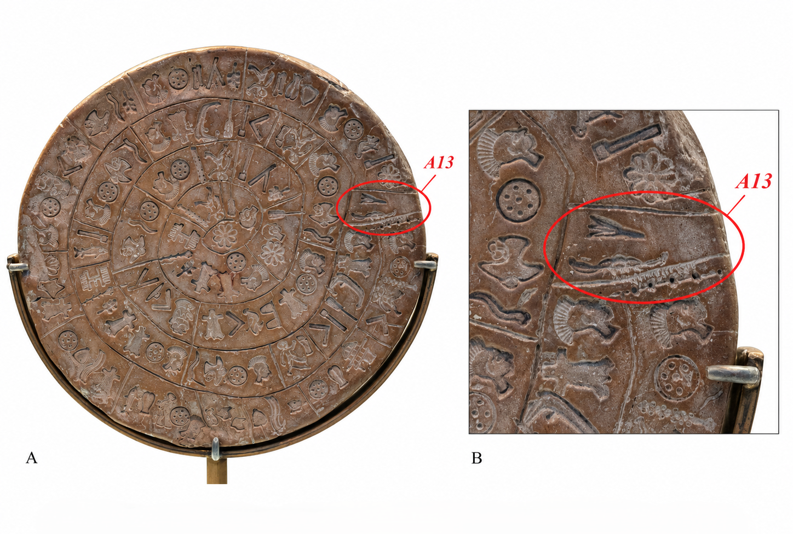

1. Введение
Предыдущая работа этой серии исходила из методического принципа: физическая и композиционная организация памятника рассматривается до попытки определить значение отдельных знаков. Для недешифрованного текста этот порядок принципиален, так как число полей, их положение и повторяемость можно устанавливать независимо от языка.
На стороне A в пределах внешнего оборота возникает структурная аномалия: после регулярного ряда полей A1–A12 располагается небольшое поле A13, занимающее место перехода к внутреннему витку. Его статус является объектом данного исследования.
2. Геометрическая аномалия A13

Особое положение этого участка независимо выделил Wolfgang Reczko, разделивший каждую сторону диска на 12 полей внешнего обода и 18 полей внутренней спирали. На стороне A при этом остаётся одно дополнительное малое поле (As18b / A13).
Структура сторон описывается формулой:
- Сторона A: 12 + 1 + 18 = 31
- Сторона B: 12 + 18 = 30
Следовательно, вся числовая асимметрия сосредоточена в одном поле, пространственная и арифметическая исключительность которого совпадают в точке стыка витков.
3. Структурный эксперимент: исключение A13
Если временно исключить A13 из основного счёта, не меняя ничего другого, исходная асимметрия 31:30 превращается в строгую симметрию 30:30.
Иными словами, 61 физически выделенное поле допускает представление как 60 основных полей + A13. Значимость результата заключается в его первичности: поле A13 было изолировано по независимым геометрическим основаниям до всякого поиска числа 30.
4. От аномального поля к гипотезе ключа
Структура 30:30 показывает, что A13 — единственный элемент, исключение которого восстанавливает симметричный счёт сторон. В этом отношении A13 можно уподобить ключу, вставленному в замок: не по внешней форме, а по предполагаемой функции. Будучи отделённым от основной последовательности и расположенным в точке структурного перехода, оно может содержать принцип, позволяющий раскрыть организацию остальных полей стороны A.
Возникает проверяемый вопрос: содержит ли A13 (состоящее из знаков 39 и 11) информацию, связанную с организацией остальных тридцати полей стороны A?
5. Знак 39: трёхчастность
Первый знак (PHAISTOS DISC SIGN LILY) имеет отчётливо трёхчастную композицию. Ботаническая идентификация здесь вторична. Наиболее простая количественная гипотеза предполагает чтение формы как числового указателя: 39 → «три». Поскольку знак встречается на диске неоднократно, это предположение подлежит независимой проверке (см. Раздел 19).
6. Знак 11: исходная идентификация
Знак 11 является единственным знаком репертуара Фестского диска, засвидетельствованным только один раз. Luigi Pernier определил его как «вогнуто-выпуклый лук скифского типа с ослабленной тетивой» (PHAISTOS DISC SIGN BOW). Уникальность знака не была проблемой для древнего адресата, владеющего системой письма, однако требует от современного исследователя поиска семантических возможностей слова «лук» в релевантных древних традициях.
7. Аккадское qaštu: лук как геометрическая форма
В старовавилонской математической традиции аккадское qaštu(m) (лук) засвидетельствовано также как геометрический термин. Лексикографический корпус (DCCMT/ORACC) фиксирует его употребление с глоссой “a geometrical figure”. Miguel Civil, разбирая лексикографическое соответствие, определяет его как “arc as a shape” («дуга как форма»). Таким образом, в письменной традиции бронзового века засвидетельствована семантическая область: лук → дуга как форма.
Более поздние индоевропейские параллели — например, др.-греч. τόξον (лук / свод), лат. arcus (лук / арка / дуга) и др.-арм. աղեղ(ն) (лук / дуга) — демонстрируют типологическую повторяемость и когнитивную естественность такого семантического сближения, однако историческим фундаментом для текста бронзового века остается именно старовавилонский материал.
8. Непрямое использование пиктограмм
Принцип использования изображения за пределами его прямого предметного значения имеет надежные анатолийские и ближневосточные параллели:
- Фонетический ребус (парономазия): В лувийской иероглифике знак LEPUS «заяц» употребляется для записи tapariya- «править» из-за фонетической близости к лувийскому названию зайца tapari-.
- Семантическая полисемия: Старовавилонское qaštu демонстрирует перенос по визуально-концептуальному сходству (оружие → геометрия).
Для знака 11 («лук» → «дуга») предполагается именно второй, семантический механизм переноса.
9. Сочетание 39–11
Минимальная структурная комбинация двух знаков (ТРИ + ДУГА) формирует условную формулу: «три в дуге». Два изображения могут обозначать три элемента, организованных в одной дуговой единице (ряду).
10. Применение формулы
Оставшиеся 30 полей стороны A последовательно объединяются по три, образуя матрицу 10×3 (десять рядов). Повторяемость содержимого полей на этапе построения матрицы не используется. Схематически операция показана на рис. 2.
| Ряд | 1 | 2 | 3 |
|---|---|---|---|
| 1 | A1 | A2 | A3 |
| 2 | A4 | A5 | A6 |
| 3 | A7 | A8 | A9 |
| 4 | A10 | A11 | A12 |
| A13 (39–11) — исключено из основного ряда | |||
| 5 | A14 | A15 | A16 |
| 6 | A17 | A18 | A19 |
| 7 | A20 | A21 | A22 |
| 8 | A23 | A24 | A25 |
| 9 | A26 | A27 | A28 |
| 10 | A29 | A30 | A31 |
Рис. 2. Разбиение 30 основных полей стороны A на десять последовательных троек после исключения A13. Порядок полей не изменяется.
11. Точные повторы
Матрица 10×3 для полей A14–A31 с визуальным выделением точных повторов.
| Ряд | Позиция 1 | Позиция 2 | Позиция 3 |
|---|---|---|---|
| 5 | A1402-27-25-10-23-18 | A1528-01 | A1602-12-31-26 |
| 6 | A1702-12-27-27-35-37-21 | A1833-23 | A1902-12-31-26 |
| 7 | A2002-27-25-10-23-18 | A2128-01 | A2202-12-31-26 |
| 8 | A2302-12-27-14-32-18-27 | A2406-18-17-19 | A2531-26-12 |
| 9 | A2602-12-13-01 | A2723-19-35 | A2810-03-38 |
| 10 | A2902-12-27-27-35-37-21 | A3013-01 | A3110-03-38 |
Таблица 1. Матрица полей A14–A31. Одинаковая заливка обозначает полностью идентичные повторяющиеся поля.
Повторы: A14=A20, A15=A21, A16=A19=A22, A17=A29, A28=A31.
При проверке учитываются только полностью идентичные поля. В матрице 10×3 обнаруживаются пять типов точных повторов:
- 02-27-25-10-23-18 (A14, A20) — Столбец 1
- 28-01 (A15, A21) — Столбец 2
- 02-12-31-26 (A16, A19, A22) — Столбец 3
- 02-12-27-27-35-37-21 (A17, A29) — Столбец 1
- 10-03-38 (A28, A31) — Столбец 3
Все пять типов сохраняют вертикальную позицию. Семь из семи попарных совпадений конгруэнтны modulo 3. Выраженное через дистанции между повторами, это свойство выглядит как ряд: 6, 6, 3, 6, 3, 12, 3. Все расстояния строго кратны трём.
12. Блок A14–A22
Система максимально наглядна в центральном блоке (ряды 5–7), где ряды 5 и 7 совпадают полностью (X–Y–Z), а в ряду 6 сохраняется элемент третьей позиции (W–Q–Z). Трёхчленное разбиение выявляет систематическую позиционную организацию.
13. Контроль других разбиений
Среди всех прямоугольных делителей числа 30 только ширина 3 сохраняет вертикальную позицию всех точных повторов (7/7 пар). Число три было выведено из морфологии знака 39 до перебора вариантов. В простой нулевой модели случайной перестановки вероятность такого позиционного распределения составляет около 0,09 %.
14. Что именно представляет собой A13?
Полученный результат допускает три прагматические модели:
- Операционный ключ: A13 императивно предписывает способ организации («разбей по три»).
- Структурная метка: A13 описывает уже существующий композиционный принцип Стороны А (заголовок/маркер).
- Имманентный ритм: Периодичность modulo 3 является синтаксическим или формульным свойством самого текста, а форма A13 — случайным визуальным совпадением. Порядок исследования (число 3 было предложено до выявления выравнивания) делает сценарий случайной подгонки маловероятным, но не исключает его полностью.
15. Альтернатива технической вставки
Геометрия A13 допускает объяснение поля как технического исправления (пропущенного текста). Однако эта модель объясняет исключительно физическую форму вставки. Она не предсказывает связи между содержимым A13 и операцией, которая при применении к остальным 30 полям выявляет их трёхчленную позиционную организацию.
16. Сторона B
Сторона B содержит 30 полей изначально, но её точные повторы не образуют вертикальной конгруэнтности в матрице 10×3. Асимметрия замысла остается открытым вопросом. Гипотеза ограничивается утверждением, что A13 — это структурный элемент Стороны A, и не претендует на статус универсального ключа ко всему памятнику.
17. Число 30 и календарная интерпретация
Симметрия 30:30 естественно ставит вопрос о возможной календарной интерпретации числа 30. Marianna Ridderstad независимо сопоставляла 30 групп диска с 30-дневным месяцем. Новизна предлагаемого подхода в том, что календарное число 30 возникает не через предварительную астрономическую трактовку знаков, а структурно — посредством удаления геометрической аномалии.
18. Структурная ремарка: 13, 12 и 30
В качестве факультативной внешней параллели фиксируется сочетание чисел 13, 12 и 30. Современное деление эклиптики по границам созвездий включает Ophiuchus как тринадцатое эклиптическое созвездие, тогда как математический зодиак состоит из 12 равных секторов по 30°. В структуре стороны A независимо возникает формально сопоставимая последовательность: дополнительный элемент → 12 основных внешних полей → итоговое число 30 после его исключения. Исторического вывода из этого совпадения здесь не делается.
19. Проверяемое предсказание и проблема прагматики
Модель содержит встроенный критерий фальсификации. Если дальнейший анализ знака 39 в других контекстах потребует значений, принципиально несовместимых с числом три или трёхчленностью, гипотеза структурного ключа будет опровергнута.
Однако следует строго разграничивать две задачи: верификацию значения знака 39 и определение прагматического статуса поля A13 (модели 14.1, 14.2 и 14.3). Если числовое значение знака 39 независимо подтвердится, модель случайного визуального совпадения существенно потеряет правдоподобие, а основной выбор сместится к двум оставшимся вариантам: операционному ключу и дескриптивной структурной метке.
20. Пределы вывода
Предлагаемая структурная модель не является лингвистической дешифровкой. Она не устанавливает язык диска, фонетику знаков или точный грамматический синтаксис. Переход «лук → дуга» подкреплен старовавилонской параллелью и типологическими данными, но не доказывает существования идентичной лексемы в языке минойского Крита.
21. Заключение
Независимо выделенная геометрическая аномалия A13 нарушает симметрию диска (31:30). Удаление поля её восстанавливает (30:30). Чтение знаков поля через полисемию бронзового века («три в дуге») и применение этой формулы к оставшемуся тексту формирует матрицу 10×3, в которой все пять типов точных повторов сохраняют одну и ту же позицию modulo 3 на дистанциях, кратных трём. Совокупность этих наблюдений придаёт интерпретации A13 как структурно значимого метатекстового элемента существенно большую объяснительную силу, чем гипотезе чисто технической вставки, поскольку последняя объясняет необычную форму поля, но не предсказывает обнаруживаемую после его исключения трёхчленную позиционную организацию.
Примечания
- [1] Revazyan, A. (2026). Weaving the Beginning: A Textile Model for the Five-Dot Opening Marker on the Phaistos Disc. Zenodo. https://doi.org/10.5281/zenodo.22236687.
- [2] В первоначальной статье Reczko дополнительное малое поле в одном месте было ошибочно отнесено к стороне B. В опубликованном erratum исправлено на сторону A.
- [3] Reczko связывал 18 внутренних полей с циклом Сароса и пытался включить дополнительное малое поле в ту же астрономическую модель. Настоящая работа использует только его независимое геометрическое наблюдение.
- [4] Средняя продолжительность синодического месяца составляет около 29,53 суток; поэтому 29- и 30-дневные месяцы естественны для лунных календарных систем. Ridderstad получала календарные величины посредством исключения иных полей и предварительной интерпретации отдельных знаков. Эта процедура здесь не используется.
- [5] Статистический контроль основан на простой модели случайного размещения и не моделирует синтаксис, грамматику или композицию реального текста. Значение около 0,09 % относится только к событию, при котором все экземпляры каждого из пяти типов полных повторов оказываются внутри одного столбца при фиксированном трёхстолбцовом разбиении.
- [6] Современные границы созвездий и вавилонская система двенадцати равных зодиакальных знаков являются различными классификациями. Параллель касается структуры 12×30 и положения Ophiuchus за пределами двенадцатизнаковой схемы, а не реконструкции буквального исторического акта его «исключения».